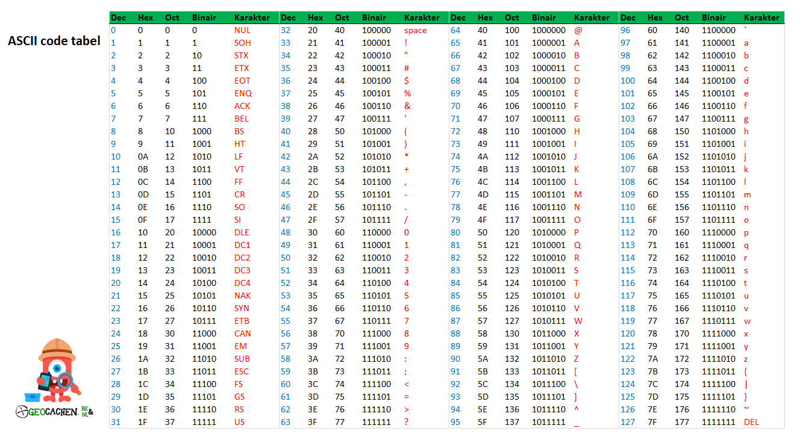

Computers kunnen deze dagen gigantische hoeveelheden van informatie opslaan, maar hoe doen ze dat eigenlijk? Dit gaat door middel van bits, één bit is de allerkleinste vorm van informatie mogelijk voor een computer. een bit bestaat uit twee opties, aan en uit. Dit wordt aangegeven door een 1 en een 0. Als je 8 bits op een rij zet (bijvoorbeeld 01001101) heb je één byte. 1000 bytes zijn samen één kilobyte, en duizend kilobytes zijn samen één megabyte. Dit gaat door tot de terabyte.
Met bits kan je getallen maken, dit doe je via het binair stelsel. Stel dat je een getal hebt wat bestaat uit acht bits (bijvoorbeeld 10011010) dan staat het meest rechter getal voor het nummer 1. Dit nummer (1) wordt elke keer verdubbeld. Zo staat het meest linker getal dus voor 1x 2 tot de macht 7= 128. Staat er een 1? dan betekent het dat dit nummer er in zit. Zo is twaalf 00001100 want 0x128+0x64+0x32+0x16+1x8+1x4+0x2+0x1=12. Het hoogste getal wat je kan maken met 8 bits is 128x1+64x1+32x1+16x1+8x1+4x1+2x1+1x1= 255. Met dit systeem kan je elk getal mogelijk maken.
Hieronder zie je een ASCII stelsel, zo kan je zien wat je allemaal met het binair stelsel kan doen.
Wil je oefenen met het binair stelsel? Klik dan op de link hieronder en speel Binary Bonanza!
Klik hier om Binary Bonanza te spelen!